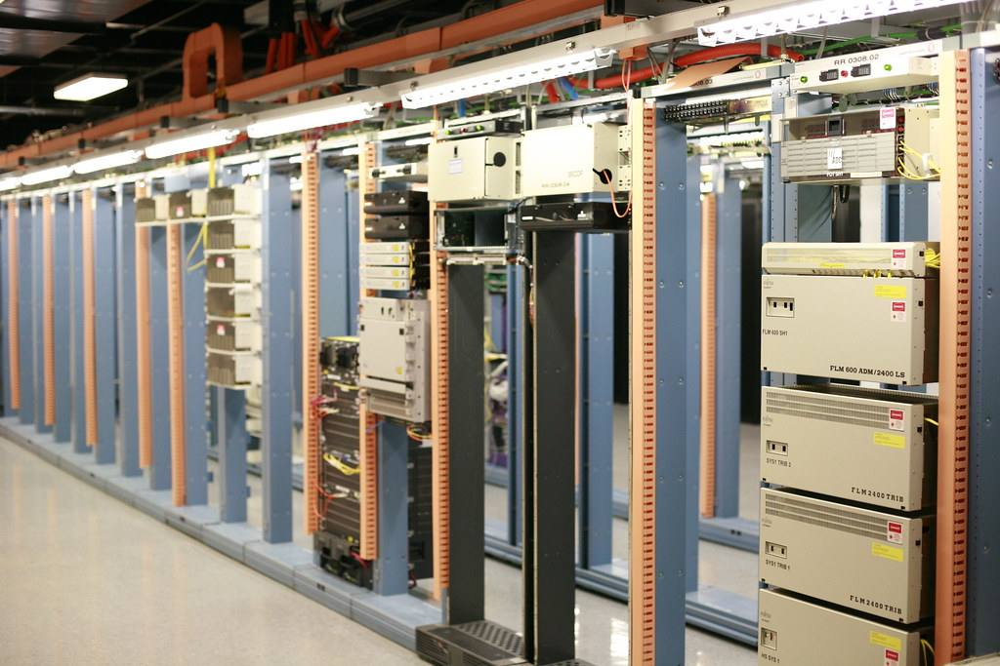
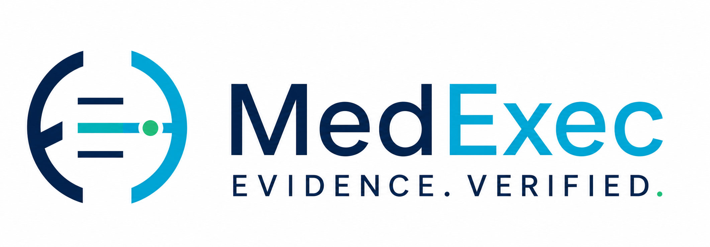
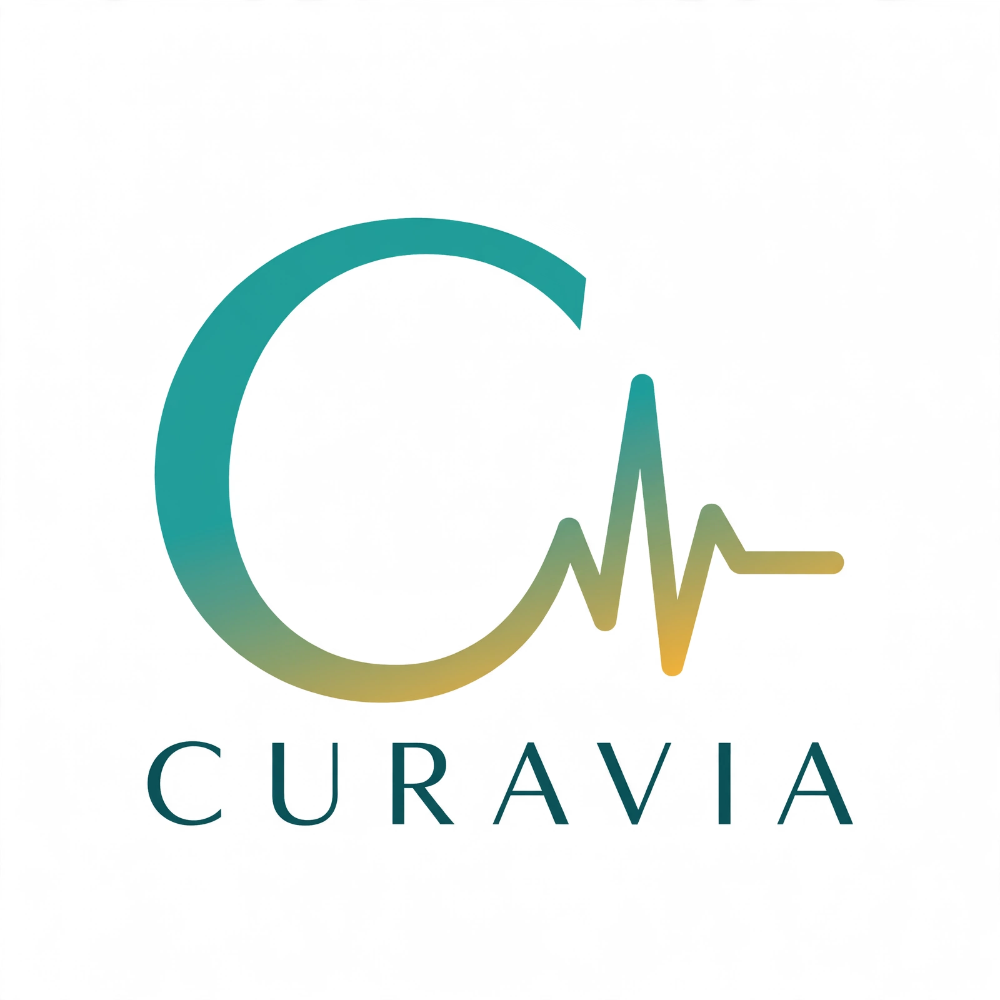
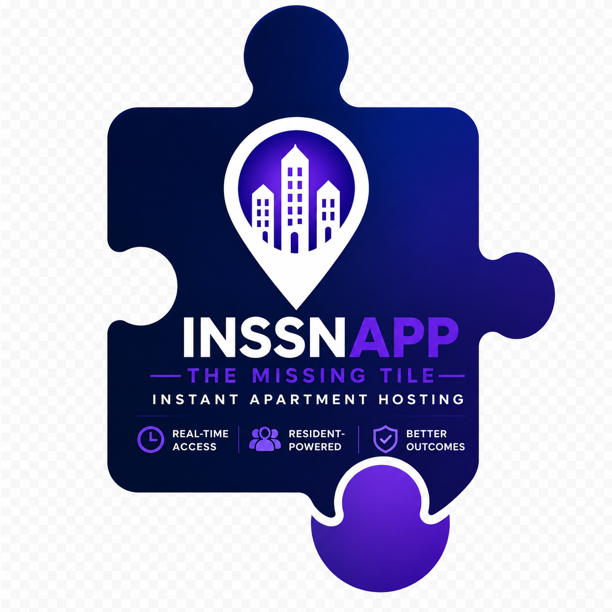
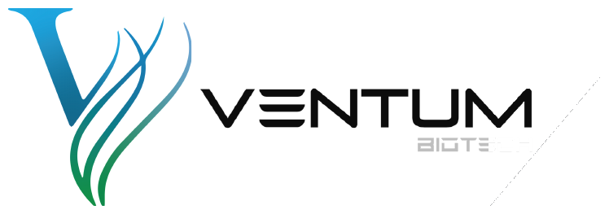

IEC helps translate technology into a clear business case, a practical deployment path and meaningful customer relationships.

A selection of the technology platforms IEC advises, builds and commercializes — each one moving through pilot, partnership or market development.

AI-assisted medical documentation and reporting — draft examiner narratives from visit context. Currently in internal pilot.
Visit MEDEXEC ↗
The clinic platform in development — AI voice front desk, appointment recovery, 24H Doctor care programs, and exam-room scribe with billing review.
Visit CURAVIA ↗
Instant property showings connecting property management, current tenants, prospective tenants and brokers.
Visit INSSNAPP ↗Off-market acquisition intelligence — find, analyze, verify and offer, built for Massachusetts real estate. Partner project.
Your personal study companion — upload books, highlight key passages, build flashcards, and quiz yourself. Currently in pilot.
Open BookLens ↗Ventum Biotech is an independent company — not an IEC-owned platform. IEC’s founder serves as its Head of Global Strategic Partnerships & International Business Development, leading a six-month strategic growth and commercialization sandbox.

Bio-decontamination technology (Ventum One-Touch) — IEC leads its strategic growth and commercialization sandbox.
Visit Ventum ↗Strong technology needs more than a product demonstration. IEC helps define the problem, the buyer, the workflow, the adoption barriers and the partnerships required to move from concept to implementation.
Define the use case, value proposition and audience in precise business language.
Align the platform with real users, operational steps and decision responsibilities.
Coordinate conversations with potential customers, partners and implementation stakeholders.
Support non-clinical business strategy for secure, human-reviewed healthcare technology.
Build phased pilots, feedback loops, channel strategy and market-development priorities.
Identify where independent privacy, cybersecurity, legal and compliance professionals are required.
IEC focuses on adoption — not technology for its own sake. The strongest platform fits a real operating process, produces a useful outcome and keeps qualified people responsible for critical decisions.
IEC adapts its role to the maturity of the platform and the organization behind it:
Non-clinical workflow automation, document intelligence, scheduling, coordination and performance reporting.
Secure information organization, review workflows, client communication and decision-support tools.
Controlled demonstrations, stakeholder feedback, implementation planning and commercial follow-through.
Customer discovery, channel strategy, partnership development and cross-border commercialization.
State the user problem and measurable business outcome.
Test the workflow with representative stakeholders.
Coordinate a controlled demonstration and feedback plan.
Build the partnerships and operating model for expansion.